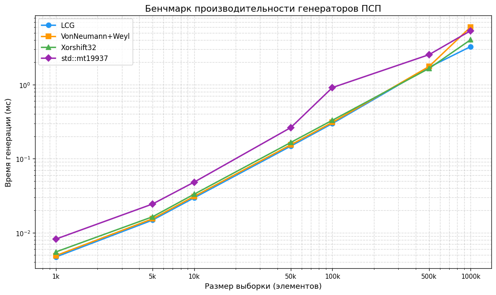
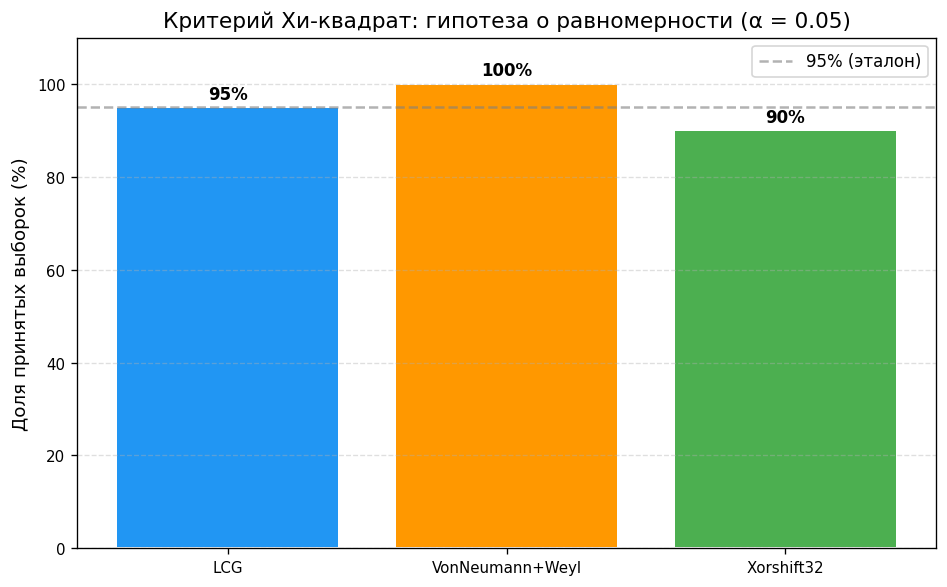
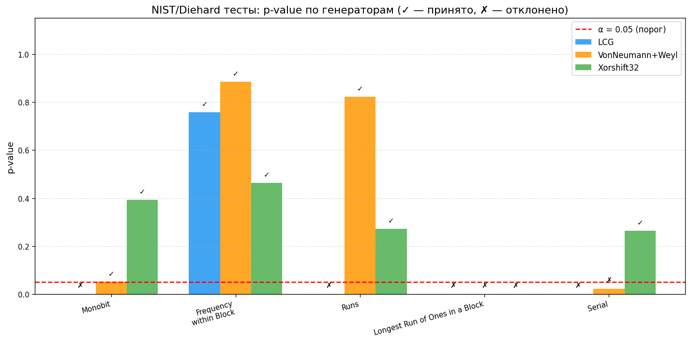
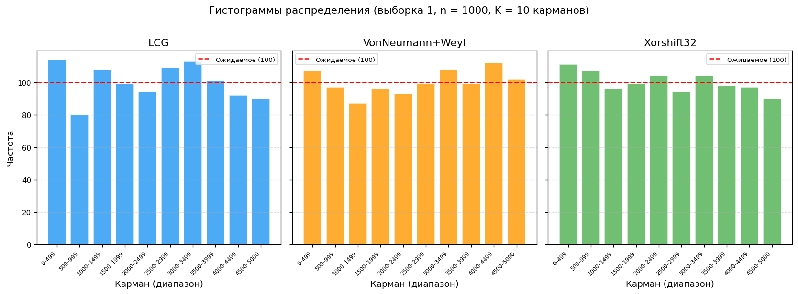
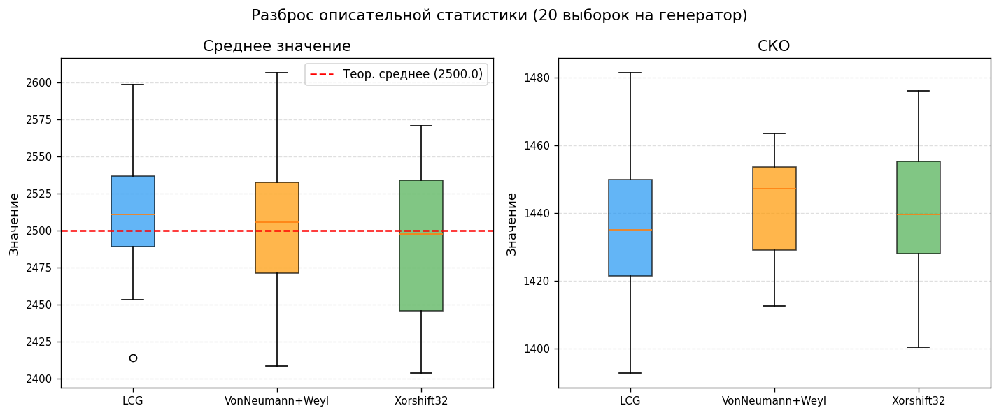

| Генератор | Формула / метод |
|---|---|
| LCG | Xn+1 = (1103515245·Xn + 12345) mod 2³¹ |
| Von Neumann+Weyl | middle(X² + w), w += 0x9E3779B97F4A7C15 |
| Xorshift32 | x ^= x<<13; x ^= x>>17; x ^= x<<5 |





output/speed_results.csv — бенчмаркoutput/stats_summary.csv — статистика выборокoutput/nist_results.csv — NIST-тестыoutput/histogram.csv — гистограммы